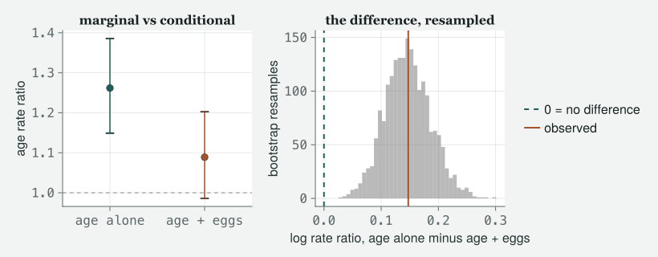

A residual plot tells you whether the model is embarrassed by the data you have. Simulating from the model tells you what the model believes about data you have not seen, and that is where the embarrassing beliefs live.
Draft
All ten classes of version 1 are drafted and their code runs end to end (1–10), with Appendix A, the preface and the coda. Every number and figure on this page was produced when the site was built; the book itself is not written.
Engines DRM.jl 0.7.1 at 4d9248f88 (Julia 1.10.0) · drmTMB 0.7.0 (R 4.6.0) Provenance Every code block and printed result below was actually run when the site was built, and nothing is typed from memory. Every random draw is seeded where it is made, so the page comes out the same every time. The one R block was run once by hand, on the date shown, with R against the same file, and is labelled as such; the R script that produced it is kept at data/ch5/ch5-r-box.R. Caveat The data are real: the 2012 Lundy Island sparrow and female records, read directly from data/2012/MBodySize.csv and data/2012/FemaleSuccess.csv (where the files came from is recorded in data/2012/README.md). Nothing here is invented; the simulated quantities are drawn from models fitted to those files, from stated seeds.
What this chapter pretends. Every model on this page has fixed effects only — the sparrows are measured once each here, and the females are not identified at all, so two broods by the same bird are treated as strangers. That is the same pretence Classes 2, 3 and 4 made, and the one Class 6 stops making. The residual and simulation tools on this page survive that repair unchanged. The way you compare two models does not, and Class 8 is where that is put right — so treat the last section of this class as provisional. The standard errors change too. Note what the repair costs: FemaleSuccess.csv records neither the female nor the brood, so on that file the pretence cannot be ended by a cleverer formula; it needs a different file. BodySize.csv records repeated measurements per bird and is where Class 6 goes; SparrowSurvival.csv is the file with Mum and BroodNo in it.
Objectives
By the end of this class you should be able to:
Say what a response residual, a Pearson residual and a randomised quantile residual each divide by, why all three coincide in a Gaussian model, and why only the third one can be judged against the same picture in every family.
Read a worm plot: say what is on each axis, what a correct model looks like, and what the envelope drawn round it does and does not promise.
Calibrate a diagnostic by simulating its own null rather than by eye, and say how many points outside an envelope is a lot.
Check a model by simulating from it: draw new data with an explicit generator, recompute a statistic you care about, and place the observed value in the simulated distribution.
Compare two nested models with AIC and with a likelihood-ratio test, say what a difference of a few AIC units is and is not evidence of, and say which comparisons the engine refuses outright, which it only warns you about, and which it cannot check at all.
The class
Itchy’s office, Friday, and there are two laptops open on the desk
instead of one. TOTO has the sparrow model from Class 2 and a printed
page of coefficients he is rather pleased with. MOMO has her fledgling
counts, the ones the family lied about, and the expression of somebody
who has stopped trusting output. EDDIE has come for the last twenty
minutes and will ask the question the first forty are for.
Itchy
Four classes in, you can fit almost anything. Nobody has yet asked me
the only question a referee will ask, which is whether the thing you
fitted is any good. Today is that question, and it is a service class:
no new rung, no new constant freed, just the machinery you will use in
every chapter after this one.
Momo
In SPSS I would have clicked “save residuals” and plotted them.
Itchy
And in a Gaussian model you would have been right, which is the trap.
Load both files.
# tools/figures.jl includes tools/theme_itchy.jl itself, so one include does both.include("../tools/figures.jl")usingDRM, DataFrames, CSV, Statistics, Random, Printf, CairoMakieimportDistributions# qualified: DRM exports its own Poisson, Binomial, …set_theme!(theme_itchy(:light))raw = CSV.read("../data/2012/MBodySize.csv", DataFrame)raw.Sex =ifelse.(raw.Sex .=="F", "female", "male")sparrows =select(raw, :BirdID, :Sex, :Tarsus, :Wing)females = CSV.read("../data/2012/FemaleSuccess.csv", DataFrame)n_sp =nrow(sparrows)n_fem =nrow(females)@printf("sparrows: %d rows females: %d rows\n", n_sp, n_fem)
sparrows: 171 rows females: 163 rows
Three residuals, and why you were only taught one
Itchy
Toto’s model first, because it is the one where nothing goes wrong.
residual SD, response scale : 1.4173 mm
fitted sigma : 1.4132 mm
Pearson residual SD : 1.0029
quantile residual SD : 1.0029
largest |Pearson - quantile|: 2.620e-14
Itchy
Three names, three definitions, one vector. The
response residual is observed minus fitted, in
millimetres. The Pearson residual divides that by the
standard deviation the family decrees for that row — here σ, the same
1.413 mm for every bird, so it is just a change of units. The
randomised quantile residual asks the fitted model what
probability it puts below the value you actually saw and maps that
probability through a normal.
Toto
And the last two are the same number.
Itchy
To 3e-14 millimetres, which is arithmetic noise and not a coincidence.
In a Gaussian model the response is normal by assumption, so mapping it
into a normal and back does nothing at all. In the one model
everybody is taught, all three residuals are the same object.
That is exactly why “the residual” feels like one word, and it is why
the habits you brought from that model do not survive contact with a
count.
Momo
So do it to mine.
Itchy
Same three definitions, and this time write out what each one divides
by, because the family has an opinion now.
pois =drm(bf(@formula(Fledglings ~ Age)), Poisson(); data = females)mu_p =fitted(pois)r_response =residuals(pois; type=:response)# Poisson decrees Var(y) = mu, so the Pearson divisor is sqrt(mu), row by row.r_pearson = r_response ./sqrt.(mu_p)r_quantile =residuals(pois; type=:quantile, rng =MersenneTwister(1))for (nm, r) in (("response", r_response), ("Pearson", r_pearson), ("quantile", r_quantile)) skew =mean(((r .-mean(r)) ./std(r)) .^3)@printf("%-9s : SD %.4f skew %+.4f distinct values %3d\n", nm, std(r), skew, length(unique(round.(r, digits =8))))end@printf("fitted counts run from %.4f to %.4f\n", extrema(mu_p)...)
The first two take only 32 different values each and the third takes
163.
Itchy
Which is 163, one per female, and that is the whole point. A count is a
whole number, so observed minus fitted lands on a lattice: at a given
fitted value there are only so many residuals available. Dividing by the
square root of the mean rescales the lattice; it does not dissolve it.
Look at all three.
Figure 1: The same fit, three definitions of ‘residual’. Response and Pearson residuals fall on stripes, because a count can only miss its mean by a whole number; only the randomised quantile residual has a continuous distribution that a normal reference can be laid against.
Toto
All three are four columns, because age only takes four values. But the
first two columns are a few dots stacked with gaps between them, and the
third is filled in.
Itchy
That is the right way to look at it, and it is not the columns that
matter — those are the four ages. It is what is inside a column. The
first two are stripes and there is nothing wrong with them; they are
telling you the truth about a discrete response. What they cannot do is
be compared with a normal distribution, because they are not one and
never will be, however right the model is. Notice also that the response
residuals have a floor that moves: the smallest one
possible for a female is minus her own fitted value, because she cannot
fledge fewer than none. No response residual in this file can be more
negative than -5.139, minus the largest fitted count of them all, and
the most negative one that actually occurs is -4.073 — a female the
model expected 4.073 chicks from, who fledged none.
Momo
So the third one is the one I plot.
Itchy
The third one is the one you plot, in every family in this book, and it
is the reason this class exists at all. Randomised quantile
residuals are Dunn and Smyth’s idea (1996) and the sentence
that makes them work is short: if the model is right, the probability it
assigns below your observation is uniform, and a uniform pushed through
the inverse normal is standard normal. Whatever the family. For a
discrete response the probability is not a single number but an
interval, so you draw uniformly inside that interval — hence
randomised, hence a generator, hence a seed, every single time.
↔︎ TRANSLATE: one residual R has that we do not, and one comparison R
refuses
The R twin of this engine, drmTMB, takes type = "pearson" and the Julia engine does not: residuals(fit; type = ...) in DRM.jl 0.7.1 accepts :response and :quantile and throws on anything else. So the Pearson residual above is written out by hand, and that is not a workaround to apologise for — writing (y - μ̂) / sqrt(V(μ̂)) yourself forces you to say which variance function the family decreed, which is Class 3’s whole lesson turned into arithmetic. When you move a script to R, read the divisor off the family rather than trusting that two packages mean the same thing by one word.
The second half runs the other way. drmTMB’s anova()refuses every likelihood-ratio comparison, not merely the invalid ones, so the test in this chapter’s comparison section has no R-side equivalent today and you fall back to AIC(). That is an absence in the R package, not a disagreement between the packages: the two AICs agree to every digit both engines print, and R’s Pearson residual SD is the same number the hand-written divisor produced above. Class 8 is where the refusals that are principled live, and where you learn which comparisons deserve one.
The R block below was run once, by hand, with R on 2026-09-07 against the same archived file this chapter reads, by the script kept at data/ch5/ch5-r-box.R, and pasted in; it is not re-run when the page is built.
# R output, run once by hand on 2026-09-07 and pasted here; not re-run when the page is built.# drmTMB 0.7.0 / R 4.6.0. Produced by data/ch5/ch5-r-box.R,# reading data/2012/FemaleSuccess.csv:# m1 <- drmTMB(bf(Fledglings ~ Age), family = poisson(), data = d)# m2 <- drmTMB(bf(Fledglings ~ Age + logEgg), family = poisson(), data = d)AIC(m1) =739.9864232AIC(m2) =652.8207945residuals(m1, type ="pearson") -- first three and SD:-1.599374-1.599374-1.599374sd =1.248268anova(m1, m2):Error in`anova()`:!`anova()` likelihood-ratio comparisons are not implemented for<drmTMB>fits.
The picture, and what its envelope promises
Itchy
Now the plot. It is the one fig_diagnostic draws, and
before anybody looks at it I am going to tell you what is on the axes,
because the commonest failure in this room is reading a picture you have
assumed the meaning of.
# The arithmetic fig_diagnostic draws, exposed so the picture can be counted# instead of admired. `erfinv_approx` comes from tools/figures.jl.functionworm_parts(r) n =length(r) obs =sort(r) p = ((1:n) .-0.5) ./ n theo =sqrt(2) .*erfinv_approx.(2.* p .-1) # normal quantiles dens = x ->exp(-x^2/2) /sqrt(2π) se =sqrt.(p .* (1.- p) ./ n) ./dens.(theo) # SE of the ith order statistic (; theo, dev = obs .- theo, se)endn_outside(r) = (w =worm_parts(r); count(abs.(w.dev) .>2.* w.se))n_below(r) = (w =worm_parts(r); count(w.dev .<-2.* w.se)) # and above = outside - belown_zeros_outside(r, y) = (w =worm_parts(r); count(y[sortperm(r)][abs.(w.dev) .>2.* w.se] .==0)) # of the points outside, how many are y == 0# van Buuren and Fredriks read the worm's SHAPE, not only its count: the vertical# offset is an error in the median, the SLOPE is an error in variation, the curvature# is skewness. Least squares through (theoretical quantile, deviation) is that slope.worm_slope(r) = (w =worm_parts(r); cov(w.theo, w.dev) /var(w.theo))functionlongest_run(r) # longest same-side excursion w =worm_parts(r) side =sign.(w.dev) .* (abs.(w.dev) .>2.* w.se) best =0; cur =0; prev =0.0for v in side cur = (v !=0&& v == prev) ? cur +1: (v !=0 ? 1:0) prev = v best =max(best, cur)end bestend
Itchy
The horizontal axis is the quantile a standard normal would have put at
that rank. The vertical axis is the deviation from it —
sorted residual minus expected quantile. So a correct model does not
give you a diagonal line. It gives you a flat line at
zero. This is a detrended quantile plot, a worm plot, and van
Buuren and Fredriks (2001) named it that because a wrong model makes it
wriggle. The band is a pointwise two-standard-error envelope on each
order statistic under normality.
Toto
So five per cent of the points should fall outside it.
Itchy
That is the sentence I want to kill. Draw it first, then we will find
out.
out_p =n_outside(r_quantile)run_p =longest_run(r_quantile)mcse =1/sqrt(2* n_fem)@printf("quantile residual SD : %.4f (%.2f Monte Carlo SE from 1)\n",std(r_quantile), abs(std(r_quantile) -1) / mcse)@printf("points outside the +/-2SE envelope : %d of %d (%d below the band, %d above)\n", out_p, n_fem, n_below(r_quantile), out_p -n_below(r_quantile))@printf("longest run of consecutive points outside, same side : %d\n", run_p)@printf("slope of the worm : %+.4f (residual SD - 1 : %+.4f)\n",worm_slope(r_quantile), std(r_quantile) -1)fig_diagnostic(r_quantile; title ="fledglings ~ age, quantile residuals")
quantile residual SD : 1.3067 (5.54 Monte Carlo SE from 1)
points outside the +/-2SE envelope : 107 of 163 (49 below the band, 58 above)
longest run of consecutive points outside, same side : 51
slope of the worm : +0.2891 (residual SD - 1 : +0.3067)
Figure 2: Worm plot of the fledgling-count model’s randomised quantile residuals, at randomisation seed 1. The vertical axis is deviation from the normal quantile, so a correct model gives a flat line at zero inside the band. This one leaves the band at both ends — a long run of low ranks below it and a long run of high ranks above it — which is not one excursion but two of opposite sign, and that pair is what a residual spread wider than one looks like: the worm tilts.
Momo
107 out of 163 are outside. That is more than half.
Itchy
It is, and Toto has told you it should be about five per cent, and I
have told you not to believe him, and neither of us has done anything
but assert. The envelope is pointwise: each ribbon is
drawn at two standard errors, so the rate per point really is
the normal’s own two-sigma tail and Toto has not invented it. Two things
break the step from that rate to a count. The points are the
order statistics of one sample — the same residuals sorted from smallest
to largest, one per rank — so they are heavily correlated — when the
curve drifts it drifts together and dozens cross at once. And these
residuals are not a fresh normal sample: they came out of a model
fitted to these very data, which is the caveat Dunn and
Smyth put in their own abstract — normal apart from the sampling
variability in the estimated parameters. Simulate both nulls and find
out which one this picture belongs to.
# TWO nulls, because the obvious one is the wrong one.# (a) what the eye reaches for: standard normal samples -- no model, no fitting.# (b) the diagnostic's OWN null: simulate from the fit, REFIT the same formula to# the invented data, recompute the quantile residuals, run the same counters.# The residuals we are judging came out of a fit, so the fitting belongs in the null.functionnull_counters(fit, refit, ndraw, rng) y =simulate(fit; nsim = ndraw, rng = rng) outs =Int[]; runs =Int[]; sds =Float64[]for k in1:ndraw r =residuals(refit(y[:, k]); type=:quantile, rng = rng)push!(outs, n_outside(r)); push!(runs, longest_run(r)); push!(sds, std(r))end (; outs, runs, sds)endrefit_age(y) =drm(bf(@formula(Fledglings ~ Age)), Poisson(); data =DataFrame(Fledglings = y, Age = females.Age))rng_naive =MersenneTwister(10)naive_out = [n_outside(randn(rng_naive, n_fem)) for _ in1:2000]rng_null =MersenneTwister(11)nullp =null_counters(pois, refit_age, 2000, rng_null)null_out, null_run = nullp.outs, nullp.runs# A simulated percentile needs its own error bar: resample the draws to get one.rng_q =MersenneTwister(12)q95 =quantile(null_out, 0.95)q95_se =std([quantile(rand(rng_q, null_out, length(null_out)), 0.95) for _ in1:400])@printf("(a) normal samples, no fit : median %.0f, mean %.2f, 95th pct %.0f (%.0f%% of %d)\n",median(naive_out), mean(naive_out), quantile(naive_out, 0.95),100*quantile(naive_out, 0.95) / n_fem, n_fem)@printf(" the pointwise two-sigma rate alone predicts a mean of %.2f\n",2* Distributions.cdf(Distributions.Normal(), -2) * n_fem)@printf("(b) simulate -> refit -> residuals, outside : median %.0f, mean %.2f, 95th pct %.0f +/- %.2f\n",median(null_out), mean(null_out), q95, q95_se)@printf("(b) simulate -> refit -> residuals, run : median %.0f, mean %.2f, 95th pct %.0f\n",median(null_run), mean(null_run), quantile(null_run, 0.95))@printf("(b) residual SD of a correct fitted model : mean %.4f, SD %.4f (1/sqrt(2n) = %.4f)\n",mean(nullp.sds), std(nullp.sds), mcse)@printf("draws of %d with at least %d points outside : %d of %d\n", n_fem, out_p, count(null_out .>= out_p), length(null_out))@printf("draws with a same-side run of at least %d : %d of %d\n", run_p, count(null_run .>= run_p), length(null_run))
(a) normal samples, no fit : median 1, mean 7.15, 95th pct 37 (23% of 163)
the pointwise two-sigma rate alone predicts a mean of 7.42
(b) simulate -> refit -> residuals, outside : median 0, mean 1.24, 95th pct 7 +/- 0.65
(b) simulate -> refit -> residuals, run : median 0, mean 0.97, 95th pct 5
(b) residual SD of a correct fitted model : mean 0.9971, SD 0.0546 (1/sqrt(2n) = 0.0554)
draws of 163 with at least 107 points outside : 0 of 2000
draws with a same-side run of at least 51 : 0 of 2000
Figure 3: The two null distributions for the same count — points outside the worm plot’s ±2SE envelope, over 2000 simulated worlds each. Each panel keeps its own x-scale, on purpose: forcing them onto one shared axis squashes the correct null flat against the naive one’s much longer tail, and the axis itself is then the first thing worth reading — one runs out past a hundred, the other barely past ten. The dashed line in each panel is that null’s own 95th percentile. It is the ratio of those two dashed lines, not either alone, that is the fivefold gap the prose names.
Itchy
Two nulls, and the gap between them is the lesson. Take the wrong one
first, because it is the one everybody’s intuition draws. Plain normal
samples, no model anywhere: the median count outside is 1, the mean is
7.15 against the 7.42 that the pointwise rate on its own predicts — so
Toto was very nearly right on average, and useless about any one picture
— and the ninety-fifth percentile is 37, 23% of the sample. That skew
is the correlation made countable, and one freedom dominates
it: the whole worm is free to sit above or below zero, and when it does,
everything crosses at once.
Itchy
Now the null that applies to the picture on the screen. Fit the model to
each invented world and that freedom disappears, because the intercept
is estimated from the very numbers it is then judged against — the worm
is pinned through the middle by construction. The median is 0, the mean
1.24, the ninety-fifth percentile 7, give or take 0.65 of a point.
A correct model, fitted, puts almost nothing outside this
band. The null everybody draws is not merely imprecise, it is
too generous by a factor of about five, and it is so because it answers
a different question: it calibrates a picture of data, and this
is a picture of a fit.
Toto
Then most of the worm plots I have squinted at were not fine.
Itchy
Most of them were not, and you had no way of knowing which. Which is why
the verdict on Momo’s plot is not “it looks bad”. It is that 107 points
outside turned up in 0 of 2000 correct-model draws, and a run of 51 in
0. None is not the same as never: with two thousand draws and no hits
the most you may say is “smaller than about three in two thousand”. The
fifth line is a bonus — the null residual SDs have a spread of 0.0546
against the 0.0554 that one over the square root of twice the sample
size predicts, so the error bar this class has been quoting from a
formula is now measured.
Momo
And the spread of the residuals is 1.307 when it should be one.
Itchy
Which is 5.5 of those standard errors from one. Now do not make the
mistake I have watched a hundred people make and count the spread, the
count outside and the run as three pieces of evidence. Look at the slope
of the worm: 0.289, against a residual SD minus one of 0.307. Van Buuren
and Fredriks’ reading of this plot is that the vertical offset is an
error in the median, the slope is an error in
variation, and the curvature is skewness — and there they are, close to
the same number, the small gap between them being the third of those
three, the curvature. One thing is wrong with these residuals, they are
too widely spread; the tilt, the two opposite-sign excursions and the
count outside are that one thing seen three ways. But there is one more
thing to check before you believe any of them, and it is the thing
almost nobody checks.
Toto
The seed.
Itchy
The seed. You handed a random generator to a residual function. Change
the seed and you get a different residual vector from the same fit. If
the verdict moves with the seed, the verdict is about your seed.
sds =Float64[]outs =Int[]for k in1:200 r =residuals(pois; type=:quantile, rng =MersenneTwister(k))push!(sds, std(r))push!(outs, n_outside(r))end@printf("over 200 randomisation seeds: SD mean %.4f (SD %.4f), range %.4f to %.4f\n",mean(sds), std(sds), minimum(sds), maximum(sds))@printf("over 200 randomisation seeds: points outside, min %d, mean %.1f, max %d\n",minimum(outs), mean(outs), maximum(outs))@printf("seeds landing inside the correct-model 95th percentile (%d): %d of 200\n",round(Int, quantile(null_out, 0.95)), count(outs .<=quantile(null_out, 0.95)))
over 200 randomisation seeds: SD mean 1.3043 (SD 0.0238), range 1.2575 to 1.3935
over 200 randomisation seeds: points outside, min 78, mean 98.9, max 119
seeds landing inside the correct-model 95th percentile (7): 0 of 200
Itchy
The residual SD wanders between 1.257 and 1.393 across seeds, so quoting
it to three decimals from one seed would be a lie of precision. The
count outside wanders between 78 and 119, and not one of the two
hundred seeds landed inside the envelope-count a correct model
reaches nineteen times in twenty. The verdict is seed-proof; the digits
are not. Report the range, or report one seed and say which.
Ask the model what it believes
Itchy
Now the part I actually brought you here for, and Eddie has arrived at
the right moment. Everything so far has been the model marking its own
homework: residuals are computed inside the fit. Eddie.
Eddie
So how do I catch it believing something absurd, rather than fitting
badly?
Itchy
You make it invent a world and you look at the world. That is the whole
idea. Simulate from the fitted model with an explicit generator,
recompute a statistic you care about, and see where the observed value
falls in the simulated pile. The recipe is three lines and it
works for every model in this book. The art is entirely in choosing the
statistic, so choose one that is a question about your animal.
Momo
Then I will use the one I already know the answer to, so I can see
whether the recipe finds it. Is it inventing females who fledge more
chicks than they laid eggs?
Itchy
Testing a new tool on a case you have already settled is exactly the
right instinct, and it is a superb statistic besides: it is checkable in
the world, and the model has never been told it is impossible. Your file
has the eggs in the second column. The model has never seen that column.
n_egg_col =count(females.Fledglings .> females.EggNo)rng_sim =MersenneTwister(20260907)ysim =simulate(pois; nsim =1000, rng = rng_sim)imposs = [count(ysim[:, k] .> females.EggNo) for k in1:size(ysim, 2)]# Class 4 computed this same quantity EXACTLY, by adding up the probability the# fitted Poisson puts above each female's own clutch. Simulation should agree.imposs_exact =sum(1- Distributions.cdf(Distributions.Poisson(mu_p[i]), females.EggNo[i])for i in1:n_fem)@printf("observed females fledging more chicks than eggs laid : %d of %d\n", n_egg_col, n_fem)@printf("simulated worlds, count of such females: mean %.2f, min %d, max %d\n",mean(imposs), minimum(imposs), maximum(imposs))@printf("proportion of simulated worlds at or below the observed count : %.4f\n",mean(imposs .<= n_egg_col))@printf("Class 4's exact expectation: %.4f simulated mean %.4f +/- %.4f (Monte Carlo SE)\n", imposs_exact, mean(imposs), std(imposs) /sqrt(length(imposs)))
observed females fledging more chicks than eggs laid : 0 of 163
simulated worlds, count of such females: mean 8.83, min 3, max 16
proportion of simulated worlds at or below the observed count : 0.0000
Class 4's exact expectation: 8.8800 simulated mean 8.8340 +/- 0.0699 (Monte Carlo SE)
Momo
Not one of the thousand.
Itchy
Not one. The fittest world the model can imagine still has 3 females
raising more chicks than they laid eggs, and it averages 8.8. The real
file has 0, because it cannot have any. This is Class 3’s beat
arriving by a different road. There we caught a model believing
in a probability above one by looking at
extrema(fitted(fit)); here the impossibility is not in the
fitted mean at all, it is in the spread the family decreed round it, and
no summary of the coefficients would ever have shown you. You had to
make the model invent birds.
Momo
This is last week. I convicted this model in Class 4 and I put
log(EggNo) in the mean to fix it.
Itchy
You did, and I am not making you re-discover it — Class 4 owns that
repair, and its bullet is “look for an exposure before you blame the
family”. What is new today is the route. Class 4
convicted this model exactly, by adding up the probability the
fitted Poisson puts above each female’s own clutch — a calculation
available only because a Poisson has a closed-form tail
— a formula you can write down and evaluate directly, with no simulation
needed. You have just convicted it by making it invent a thousand worlds
and counting. The last line has both: 8.88 exactly, 8.834 by simulation,
agreeing to inside the Monte Carlo error of the second. Take the exact
route when you can. Take the simulated one when your statistic has no
closed form, which is most of the statistics worth choosing — a maximum,
a number of ties, a longest run.
Eddie
So why refit it here at all?
Itchy
Because the model I want to interrogate for the rest of this class is
the repaired one, and because you should never take a fit on trust from
a previous chapter. Same formula as Class 4, refitted here, printed
here.
females.logEgg =log.(females.EggNo)pois2 =drm(bf(@formula(Fledglings ~ Age + logEgg)), Poisson(); data = females)pois2
Distributional regression fit (Poisson)
nobs = 163 logLik = -323.4104 converged = true
Mean model (μ):
H0: coefficient = 0
Coef. Std.Error z Pr(>|z|)
(Intercept) -1.1695 0.2546 -4.5931 4.366e-06
Age 0.0852 0.0507 1.6798 0.09299
logEgg 0.9503 0.1102 8.6213 6.622e-18
Class 4’s numbers to the last digit, as they should be — the same file,
the same formula, the same engine. The coefficient on log-eggs is 0.95,
interval 0.734 to 1.166, covering one, and an offset is exactly that
coefficient pinned at one rather than estimated. The engine still cannot
write an offset — a known limitation, reported to the engine’s authors —
so we still pay a parameter to learn that holding it at one would have
been safe. All of that is last week’s. Today’s question is
Eddie’s: is the repaired model any good? Run Momo’s check again
on it, and change nothing else.
rng_sim2 =MersenneTwister(20260907)ysim2 =simulate(pois2; nsim =1000, rng = rng_sim2)imposs2 = [count(ysim2[:, k] .> females.EggNo) for k in1:size(ysim2, 2)]@printf("with eggs laid in the model: mean %.2f, min %d, max %d\n",mean(imposs2), minimum(imposs2), maximum(imposs2))@printf("proportion of simulated worlds at or below the observed count : %.4f\n",mean(imposs2 .<= n_egg_col))fig =Figure(size = (700, 320))for (j, (nm, v)) inenumerate((("fledglings ~ age", imposs), ("fledglings ~ age + log(eggs)", imposs2))) ax =Axis(fig[1, j]; xlabel ="impossible females in a simulated world", ylabel = j ==1 ? "simulated worlds":"", title = nm)hist!(ax, v; bins =-0.5:1:16.5, color = (:grey, 0.55))vlines!(ax, [n_egg_col]; linestyle =:dash, linewidth =2)xlims!(ax, -1, 17)endfig
with eggs laid in the model: mean 0.61, min 0, max 5
proportion of simulated worlds at or below the observed count : 0.5390
Figure 4: Simulation-based check. Each histogram is 1000 worlds drawn from a fitted model; the bar counts how many females in that world fledged more chicks than they laid eggs. The dashed line is the real file, which has none. The age-only model cannot imagine a world as tidy as the real one; the model with eggs laid in it can.
Momo
The second one sits on top of the real answer.
Itchy
54% of its worlds are at least as tidy as the real file, which is as
consistent as a check can be. Note carefully what that does
not say. It does not say the model is true. A check you
pass tells you the model is not embarrassed by that statistic;
it is silent about every statistic you did not compute. Passing checks
is not evidence in the way failing them is.
Eddie
Can I use any statistic?
Itchy
Any statistic, and here is a second one from the same simulated
matrices, so you can see the recipe is general rather than special to
counting impossible birds. The classic is the Pearson chi-squared over
its degrees of freedom, which is one when the family’s variance decree
is met.
x2_over_df(y, mu, df) =sum(abs2, (y .- mu) ./sqrt.(mu)) / dfmu_p2 =fitted(pois2)obs_x2 =x2_over_df(females.Fledglings, mu_p, dof_residual(pois))obs_x22 =x2_over_df(females.Fledglings, mu_p2, dof_residual(pois2))sim_x2 = [x2_over_df(ysim[:, k], mu_p, dof_residual(pois)) for k in1:size(ysim, 2)]sim_x22 = [x2_over_df(ysim2[:, k], mu_p2, dof_residual(pois2)) for k in1:size(ysim2, 2)]refit_full(y) =drm(bf(@formula(Fledglings ~ Age + logEgg)), Poisson(); data =DataFrame(Fledglings = y, Age = females.Age, logEgg = females.logEgg))# Those two lines score every invented world against the ORIGINAL fitted mu: no# refitting, so the null never spends the parameters the observed statistic spent.# Do it the other way too, and watch the null move.sim_x22_refit = [(f =refit_full(ysim2[:, k]);x2_over_df(ysim2[:, k], fitted(f), dof_residual(f))) for k in1:size(ysim2, 2)]@printf("age only : observed X2/df %.4f ; simulated mean %.4f, 97.5th pct %.4f ; P(sim >= obs) %.4f\n", obs_x2, mean(sim_x2), quantile(sim_x2, 0.975), mean(sim_x2 .>= obs_x2))@printf("with the eggs: observed X2/df %.4f ; simulated mean %.4f, 97.5th pct %.4f ; P(sim >= obs) %.4f\n", obs_x22, mean(sim_x22), quantile(sim_x22, 0.975), mean(sim_x22 .>= obs_x22))@printf(" scored at the original mu, that null's mean must be n/(n-k) = %.4f\n", n_fem / (n_fem -dof(pois2)))@printf(" same worlds, each one REFITTED : mean %.4f ; P(sim >= obs) %.4f\n",mean(sim_x22_refit), mean(sim_x22_refit .>= obs_x22))
age only : observed X2/df 1.5679 ; simulated mean 1.0126, 97.5th pct 1.2673 ; P(sim >= obs) 0.0000
with the eggs: observed X2/df 1.1064 ; simulated mean 1.0200, 97.5th pct 1.2871 ; P(sim >= obs) 0.2350
scored at the original mu, that null's mean must be n/(n-k) = 1.0188
same worlds, each one REFITTED : mean 1.0031 ; P(sim >= obs) 0.1760
Toto
So the ratio really is about one when the model is right.
Itchy
Nearly, and the “nearly” is worth more than the number. Look at the
third line. Scoring every invented world against the mean I fitted to
the real data means the null statistic never gets to spend a
parameter, so its expectation is not one but n/(n − k), which for this
model is 1.0188 — and the simulated mean is 1.02. That is not a
discovery about Poisson models, it is bookkeeping about my own null.
Refit each world, as the fourth line does, and the mean comes back to
1.0031 while the observed model’s tail probability moves from 0.235 to
0.176.
Eddie
That is the fourth different null on this page.
Itchy
It is, and you are right to count them, because nobody ever does. One:
the naive normal-sample null, no model anywhere — the one I told you to
distrust before you had even seen it. Two: the envelope null, which
refits the model to each invented world. Three: this one, the X²-over-df
null, in two versions — the plug-in one, which does not refit and whose
mean is n/(n − k) for exactly that reason, and the refit one printed
beside it. Four, at the end of the class: an AIC null which refits
both models. The difference between them is entirely
which parameters the null may re-estimate, that choice
is part of the null, and a simulated p-value whose author cannot say
which choice he made has no definition. What survives all of it: the
age-only model’s 1.568 is above the ninety-seventh-and-a-half percentile
of its own null and not one of the thousand draws reached it, and the
repaired model’s 1.106 is unremarkable either way. On this statistic the
repaired model passes. Draw its worm plot.
r_quantile2 =residuals(pois2; type=:quantile, rng =MersenneTwister(2))out_p2 =n_outside(r_quantile2)run_p2 =longest_run(r_quantile2)zero_out2 =n_zeros_outside(r_quantile2, females.Fledglings)# This model's OWN null: same recipe, the repaired formula refitted each time.rng_null2 =MersenneTwister(13)nullp2 =null_counters(pois2, refit_full, 2000, rng_null2)@printf("quantile residual SD : %.4f (%.2f Monte Carlo SE from 1)\n",std(r_quantile2), abs(std(r_quantile2) -1) / mcse)@printf("points outside : %d of %d (%d below the band, %d above) longest same-side run : %d\n", out_p2, n_fem, n_below(r_quantile2), out_p2 -n_below(r_quantile2), run_p2)@printf("of the %d points outside, %d fledged zero\n", out_p2, zero_out2)@printf("slope of the worm : %+.4f (residual SD - 1 : %+.4f)\n",worm_slope(r_quantile2), std(r_quantile2) -1)@printf("this model's own null: outside median %.0f, mean %.2f, 95th pct %.0f\n",median(nullp2.outs), mean(nullp2.outs), quantile(nullp2.outs, 0.95))@printf("draws with at least %d outside : %d of %d with a run of at least %d : %d of %d\n", out_p2, count(nullp2.outs .>= out_p2), length(nullp2.outs), run_p2, count(nullp2.runs .>= run_p2), length(nullp2.runs))@printf("for contrast, the WRONG null (plain normal samples) had %d of %d at least this bad\n",count(naive_out .>= out_p2), length(naive_out))fig_diagnostic(r_quantile2; title ="age + log(eggs), quantile residuals")
quantile residual SD : 1.0844 (1.52 Monte Carlo SE from 1)
points outside : 13 of 163 (11 below the band, 2 above) longest same-side run : 9
of the 13 points outside, 9 fledged zero
slope of the worm : +0.0726 (residual SD - 1 : +0.0844)
this model's own null: outside median 0, mean 1.45, 95th pct 8
draws with at least 13 outside : 48 of 2000 with a run of at least 9 : 52 of 2000
for contrast, the WRONG null (plain normal samples) had 344 of 2000 at least this bad
Figure 5: The same worm plot after eggs laid enters the mean structure, at randomisation seed 2. The tilt is much reduced — the slope tracks the residual SD, as it did before — but this is not a clean picture: the surviving run below the band sits at the far left, at the lowest theoretical quantiles, and the thirteen points outside the band are mostly zeros: 9 of 13. Judged against this model’s own simulated null, the count outside is a rejection, not an acquittal.
Momo
From 107 points outside to 13. That looks fixed.
Itchy
It looks fixed and it is not, and this is the moment the whole class
turns on. Against the wrong null — the plain normal samples we
drew first — 13 points outside is thoroughly ordinary: 344 of 2000 of
those draws were at least this bad. Against this model’s own null, which
is the one with a definition, 13 or more turned up in 48 of 2000 draws,
and the run of 9 in 52. Both of those are past the line people
conventionally reject at. The repaired model is rejected by its
own worm plot, and the only reason the picture looks innocent
is that the reference everybody carries in their head is five times too
generous.
Itchy
The shape is the same shape, attenuated. The slope is 0.073 against a
residual SD minus one of 0.084 — still close to the same number, still a
spread problem, just a smaller one. But look where the surviving run
sits: at the far left, the lowest theoretical quantiles, 11 points below
the band and only 2 above. The bottom of a count distribution is mostly
zeros: 9 of 13 outside the band. Hold that thought.
Toto
That was one seed, though. You told us to check.
Itchy
I did, and I ran the check on the broken model, which is the
easy case. Run it on the repaired one, where the verdict actually turns
on it.
sds2 =Float64[]outs2 =Int[]for k in1:200 r =residuals(pois2; type=:quantile, rng =MersenneTwister(k))push!(sds2, std(r))push!(outs2, n_outside(r))endq95_2 =quantile(nullp2.outs, 0.95)@printf("over 200 randomisation seeds: SD mean %.4f, range %.4f to %.4f\n",mean(sds2), minimum(sds2), maximum(sds2))@printf("over 200 randomisation seeds: points outside, min %d, mean %.1f, max %d\n",minimum(outs2), mean(outs2), maximum(outs2))@printf("seed 2, the one plotted above : %d (%.0fth percentile of the 200)\n", out_p2, 100*mean(outs2 .<= out_p2))@printf("seeds rejecting at this model's own 95th percentile (%d): %d of 200\n",round(Int, q95_2), count(outs2 .> q95_2))@printf("seed-averaged residual SD %.4f is %.1f null SDs above one\n",mean(sds2), (mean(sds2) -1) /std(nullp2.sds))
over 200 randomisation seeds: SD mean 1.1155, range 1.0609 to 1.2223
over 200 randomisation seeds: points outside, min 5, mean 22.6, max 48
seed 2, the one plotted above : 13 (18th percentile of the 200)
seeds rejecting at this model's own 95th percentile (8): 191 of 200
seed-averaged residual SD 1.1155 is 2.0 null SDs above one
Momo
So the picture I was shown was the kindest one available.
Itchy
Close to it. The count outside runs from 5 to 48 across seeds, mean
22.6, and the seed I plotted sits at the 18th percentile of its own
randomisation. 191 of the two hundred reject this model outright. The
seed-averaged spread is 1.115, 2.0 null standard deviations above one
rather than the 1.5 seed two alone suggested. That is the rule from
twenty minutes ago, turned on the verdict I most wanted to be true:
quote the range, not your favourite seed.
Momo
Then what is it getting wrong? The worm plot will not tell me.
Itchy
No, but the recipe will, and Exercise 5 is going to ask you for exactly
this. You noticed where the run sat. Count the zeros.
# Exercise 5's own suggestion -- "a number of zeros" -- run on the repaired model.# The same 1000 worlds as the figure above; one line of the recipe changed.z_obs =count(==(0), females.Fledglings)z_exp =sum(exp.(-mu_p2)) # a Poisson puts exp(-mu) on zeroz_sim = [count(==(0), ysim2[:, k]) for k in1:size(ysim2, 2)]@printf("females fledging nothing, observed : %d of %d\n", z_obs, n_fem)@printf("the repaired model expects : %.2f\n", z_exp)@printf("simulated worlds: mean %.2f, SD %.2f, largest of the %d : %d\n",mean(z_sim), std(z_sim), length(z_sim), maximum(z_sim))@printf("worlds with at least %d zeros : %d of %d (observed is %.1f simulated SDs out)\n", z_obs, count(z_sim .>= z_obs), length(z_sim), (z_obs -mean(z_sim)) /std(z_sim))
females fledging nothing, observed : 30 of 163
the repaired model expects : 15.49
simulated worlds: mean 15.70, SD 3.32, largest of the 1000 : 26
worlds with at least 30 zeros : 0 of 1000 (observed is 4.3 simulated SDs out)
Momo
Not one of the thousand. Again.
Itchy
Not one, and the most generous world it managed had 26 zeros against the
real file’s 30. The model expects 15.5 females to fledge nothing; 30 of
them did, which is 4.3 simulated standard deviations out. Now
put the two checks side by side, on the same model, from the same
thousand worlds. Pearson chi-squared over its degrees of
freedom: 0.235, a comfortable pass. Number of zeros: none of a thousand.
That is the bullet I gave you an hour ago — a check you pass is much
weaker than a check you fail — stated then, demonstrated now, on
one model, in two short computations. The chi-squared statistic averages
over the whole sample and the excess zeros are a feature of one tail;
averaging hid them, and choosing a statistic that is a fact about your
animal did not.
Eddie
So what does an excess of zeros mean here?
Itchy
Too many zeros and too few middling broods is the signature of variation
between females the model is not allowed to know about — some birds are
simply worse at this, year after year, and every row here is a stranger.
That is a random effect and it is Class 6, and it
cannot be fitted on this file at all: FemaleSuccess.csv
names neither the bird nor the brood, and
SparrowSurvival.csv is the file that records
Mum and BroodNo. That is the honest
ending of a diagnostic — not “the model is fine”, not “the model is
wrong”, but “here is the thing it does not believe, and here is the file
you need”. Better is a comparison. Right is a claim, and
nothing on this page supports it.
Two models, and how to prefer one
Eddie
You have shown me one model is worse than another by eye. Give me the
number.
Itchy
Two numbers, and they answer different questions. The first is
AIC, which is Akaike’s (1974): minus twice the
log-likelihood, plus twice the number of parameters. The way to hold on
to the second term is that a fitted model has been tuned to the very
data you are judging it on, so its likelihood flatters it, and the
parameter count is the charge for that. Lower is better, and only
differences mean anything.
pois_egg =drm(bf(@formula(Fledglings ~ logEgg)), Poisson(); data = females)for (nm, f) in (("Fledglings ~ Age", pois), ("Fledglings ~ logEgg", pois_egg), ("Fledglings ~ Age + logEgg", pois2))@printf("%-28s k = %d logLik %10.4f AIC %9.4f AICc %9.4f\n", nm, dof(f), loglik(f), aic(f), aicc(f))enddaic_egg =aic(pois2) -aic(pois)daic_age =aic(pois2) -aic(pois_egg)@printf("\nadding log(eggs) to the age model : dAIC %+.4f\n", daic_egg)@printf("adding age to the egg model : dAIC %+.4f\n", daic_age)
Fledglings ~ Age k = 2 logLik -367.9932 AIC 739.9864 AICc 740.0614
Fledglings ~ logEgg k = 2 logLik -324.8066 AIC 653.6131 AICc 653.6881
Fledglings ~ Age + logEgg k = 3 logLik -323.4104 AIC 652.8208 AICc 652.9717
adding log(eggs) to the age model : dAIC -87.1656
adding age to the egg model : dAIC -0.7923
Toto
One of those is enormous and one is nearly nothing.
Itchy
One parameter each, and that is what makes the pair worth putting side
by side. Log-eggs buys 87.2 AIC. Age, once log-eggs is already in, buys
0.79. Now the rule everybody half-remembers: a difference of about two
is the usual line, and it comes from Burnham and Anderson, who treat
models within two units of the best as having substantial support. The
line sits where it does because a parameter that buys no likelihood
at all still costs exactly that much. But that is the
worst a useless parameter can do, not what it typically does, and the
gap between those two is where people get hurt. Do not take it from me.
Toto
Simulate it.
Itchy
In a moment. Take the other number first, because the simulation you are
about to write turns out to be it. The second number is the
likelihood-ratio test: twice the gap in log-likelihood,
referred to a chi-squared distribution with as many degrees of freedom
as parameters added. It gives you a reference distribution rather than a
ranking.
lr_egg =lrtest(pois, pois2)lr_age =lrtest(pois_egg, pois2)@printf("adding log(eggs) : statistic %9.4f on %d df, p = %.3e\n", lr_egg.statistic, lr_egg.dof, lr_egg.pvalue)@printf("adding age : statistic %9.4f on %d df, p = %.4f\n", lr_age.statistic, lr_age.dof, lr_age.pvalue)
adding log(eggs) : statistic 89.1656 on 1 df, p = 3.631e-21
adding age : statistic 2.7923 on 1 df, p = 0.0947
Itchy
Log-eggs is overwhelming and age, given eggs, is not: 0.095, on one
degree of freedom. Now simulate, and watch what happens. Draw worlds
from the model without age in it — worlds where age
genuinely does nothing once eggs are accounted for — and in each one fit
both models and take the difference in AIC.
# A world in which age is useless: simulate from the reduced fit, then refit# BOTH models to each invented world and watch what AIC does with a parameter# that has nothing in it.rng_null_aic =MersenneTwister(777)ynull =simulate(pois_egg; nsim =1000, rng = rng_null_aic)null_daic =Float64[]for k in1:size(ynull, 2) d =DataFrame(Fledglings = ynull[:, k], Age = females.Age, logEgg = females.logEgg) a_red =aic(drm(bf(@formula(Fledglings ~ logEgg)), Poisson(); data = d)) a_full =aic(drm(bf(@formula(Fledglings ~ Age + logEgg)), Poisson(); data = d))push!(null_daic, a_full - a_red)end@printf("dAIC when the extra parameter is useless: median %+.4f, mean %+.4f\n",median(null_daic), mean(null_daic))@printf("proportion of useless-parameter worlds where dAIC is negative : %.4f\n",mean(null_daic .<0))@printf("2.5th percentile of that null : %+.4f\n", quantile(null_daic, 0.025))@printf("proportion at or below our observed dAIC of %+.4f : %.4f\n", daic_age, mean(null_daic .<= daic_age))# For ONE extra parameter on the SAME data, dAIC = 2k_extra - LR = 2 - LR, exactly.@printf("\nour dAIC %+.4f versus 2 - LR statistic %+.4f\n", daic_age, 2- lr_age.statistic)@printf("simulated tail probability %.4f versus the chi-squared p above %.4f\n",mean(null_daic .<= daic_age), lr_age.pvalue)
dAIC when the extra parameter is useless: median +1.5463, mean +0.9380
proportion of useless-parameter worlds where dAIC is negative : 0.1620
2.5th percentile of that null : -3.4909
proportion at or below our observed dAIC of -0.7923 : 0.1050
our dAIC -0.7923 versus 2 - LR statistic -0.7923
simulated tail probability 0.1050 versus the chi-squared p above 0.0947
fig =Figure(size = (600, 320))ax =Axis(fig[1, 1]; xlabel ="ΔAIC (age added to eggs-only model)", ylabel ="simulated worlds", title ="ΔAIC when the extra parameter is useless")hist!(ax, null_daic; bins =40, color = (:grey, 0.55))vlines!(ax, [0.0]; linestyle =:dash, linewidth =2, label ="0 = no change")vlines!(ax, [daic_age]; linewidth =2, color =Cycled(2), label ="observed ΔAIC")# legend outside the axis so it can never hide a group (house rule: tools/figures.jl)Legend(fig[1, 2], ax; framevisible =false)fig
Figure 6: ΔAIC for adding age to the eggs-only model, across 1000 worlds simulated from a fit where age is genuinely useless. The dashed line at 0 marks equal AIC; the solid line marks the ΔAIC actually observed on the real data. Part of the bar sits left of 0 — a useless parameter still wins by chance sometimes — and the observed value sits inside that same bulk, not out past it.
Toto
It goes negative sometimes.
Itchy
It goes negative in 16% of worlds where the parameter is worth nothing,
because the likelihood always improves a little by chance and now and
then improves by more than the parameter cost. Its typical value is
1.55, not two — so “two units” is the ceiling on a useless parameter’s
damage, not its usual size. And 4% of worlds have a useless parameter
winning by more than three AIC. Our own 0.79 turns up in 10% of worlds
where age does nothing at all. That is Arnold’s (2010) point about
uninformative parameters, computed on our own data rather than borrowed
from his.
Eddie
Those last two printed lines are the same test twice.
Itchy
They are, and I made you run it the long way round so that you would see
it. For one extra parameter on the same rows, ΔAIC is two minus the
likelihood-ratio statistic — the last-but-one line, exact to every digit
— so the null I have just simulated is the chi-squared
null, drawn rather than looked up. So these are not two independent
verdicts on age. The median 1.55 is two minus the median of a
chi-squared on one degree of freedom; “negative in 16% of worlds” is
that chi-squared exceeding two; and my simulated 0.105 is
lrtest’s printed 0.0947, obtained by brute force.
The simulation does not buy a second opinion; it buys the
calibration of the first one. The gap between those two numbers
is how far the chi-squared approximation can be trusted at this sample
size — far enough to stop worrying here, and not in Class 8, where a
boundary — a variance cannot be negative, so testing
one at zero puts the null on the very edge of the values it is allowed
to take — makes it wrong rather than approximate.
Momo
So age does not matter.
Itchy
No. Say what the data say, which is narrower and more useful.
@printf("rate ratio for a year of age, age alone : %.4f [%.4f, %.4f]\n", rr_age1, lo_age1, hi_age1)@printf("rate ratio for a year of age, eggs also in : %.4f [%.4f, %.4f]\n", rr_age2, lo_age2, hi_age2)@printf("smallest rate ratio this design could detect at 80%% power : %.4f\n", mde_age)@printf("rate ratio for eggs laid per year of age : %.4f\n", rr_egg_age)
rate ratio for a year of age, age alone : 1.2618 [1.1490, 1.3857]
rate ratio for a year of age, eggs also in : 1.0889 [0.9859, 1.2027]
smallest rate ratio this design could detect at 80% power : 1.1527
rate ratio for eggs laid per year of age : 1.1688
Itchy
Read them together, because separately each one lies to you. Age on its
own multiplies expected fledglings by 1.262 per year, with an interval
clear of one. Age with eggs laid in the model multiplies them by 1.089,
interval from 0.986 to 1.203, which contains one. The honest sentence is
not “age stopped mattering”. It is this: these are two different
questions, and the answers are not in conflict. The first is
the total effect of a year of age on chicks fledged. The second is the
effect of a year of age at a fixed number of eggs. Older
females lay more eggs — 1.169 times as many per year — so most of what
age does to fledgling number, it does by laying more.
Eddie
And the part that is left?
Itchy
Is the part we cannot pin down, and there I will give you the number
rather than a shrug. The smallest rate ratio this design could have
detected four times in five is 1.153, so anything smaller than that was
never going to show up here whether it exists or not. And there is a
positive statement available, which is better than an absence: the
conditional effect is genuinely smaller than the
marginal one. But say that properly, because there is a trap in it.
Eddie
The interval on one of them excludes the other one’s point estimate.
Itchy
Which is not a test, and I have seen it in print more times than I can
count. Both numbers come from the same 163 females, both are driven by
the same variation in age, so they are strongly and positively
correlated, and an interval built for one of them knows nothing about
that. What you want is an error bar on the difference,
and the way to get one when no formula is to hand is to resample the
birds.
# The difference of the two log rate ratios, with its own error bar: resample the# FEMALES with replacement, refit BOTH models inside every resample, and take the# difference each time. This keeps the correlation between the two estimates that# comparing an interval with a point estimate throws away.rng_boot =MersenneTwister(4242)boot_diff =Float64[]for _ in1:2000 d = females[rand(rng_boot, 1:n_fem, n_fem), :] a =coef(drm(bf(@formula(Fledglings ~ Age)), Poisson(); data = d), :mu)[2] b =coef(drm(bf(@formula(Fledglings ~ Age + logEgg)), Poisson(); data = d), :mu)[2]push!(boot_diff, a - b)endobs_diff = b1[2] - b2[2]@printf("log rate ratio on age, alone minus given eggs : %.4f\n", obs_diff)@printf("bootstrap SE over %d resamples : %.4f z = %.2f\n",length(boot_diff), std(boot_diff), obs_diff /std(boot_diff))@printf("95%% interval for the ratio of the two rate ratios : [%.4f, %.4f]\n",exp(quantile(boot_diff, 0.025)), exp(quantile(boot_diff, 0.975)))
log rate ratio on age, alone minus given eggs : 0.1474
bootstrap SE over 2000 resamples : 0.0399 z = 3.69
95% interval for the ratio of the two rate ratios : [1.0715, 1.2569]
fig =Figure(size = (820, 320))ax1 =Axis(fig[1, 1]; xticks = (1:2, ["age alone", "age + eggs"]), ylabel ="age rate ratio", title ="marginal vs conditional")xlims!(ax1, 0.5, 2.5)hlines!(ax1, [1.0]; linestyle =:dash, color = (:grey, 0.6))rangebars!(ax1, [1], [lo_age1], [hi_age1]; whiskerwidth =10, color =Cycled(1))rangebars!(ax1, [2], [lo_age2], [hi_age2]; whiskerwidth =10, color =Cycled(2))scatter!(ax1, [1], [rr_age1]; markersize =12, color =Cycled(1))scatter!(ax1, [2], [rr_age2]; markersize =12, color =Cycled(2))ax2 =Axis(fig[1, 2]; xlabel ="log rate ratio, age alone minus age + eggs", ylabel ="bootstrap resamples", title ="the difference, resampled")hist!(ax2, boot_diff; bins =40, color = (:grey, 0.55))vlines!(ax2, [0.0]; linestyle =:dash, linewidth =2, label ="0 = no difference")vlines!(ax2, [obs_diff]; linewidth =2, color =Cycled(2), label ="observed")# legend outside the axis so it can never hide a group (house rule: tools/figures.jl)Legend(fig[1, 3], ax2; framevisible =false)fig

Figure 7: Left: the age rate ratio under two models, point and 95% interval — age alone (marginal) and age with eggs laid held fixed (conditional). The two intervals overlap, which is exactly why comparing them by eye is the wrong move: both are estimated from the same females and the same variation in age, so they are correlated in a way neither interval alone records. Right: the bootstrapped distribution of their difference (log scale, 2000 resamples of the females, both models refitted in each), with 0 (no difference) and the observed difference both marked. The difference sits clear of 0 — this panel is what actually resolves what the left panel cannot.
Itchy
The two log rate ratios differ by 0.1474, standard error 0.0399, which
is 3.7 standard errors from zero, and the interval for the ratio of the
two rate ratios is clear of one. That is the finding:
at a fixed clutch a year of age does less than a year of age does in
total, and the gap is measured rather than eyeballed. Note that the
honest route came out stronger than the improper one, because
comparing an interval with a point throws away the correlation that
makes the difference precise. “The answer is no” would not have been a
finding at all.
What the engine refuses, and what it does not
Eddie
Last thing. What stops me doing this wrong?
Itchy
Less than you would like, and knowing exactly how much less is the point
of the next three minutes. Start with what it does stop. Hand it the two
models the wrong way round, which is the mistake everybody makes once.
lrtest(pois2, pois)
ArgumentError: lrtest: `full` must have more parameters than `reduced` (dof(full) = 2, dof(reduced) = 3; did you pass the arguments as (reduced, full)?)
(stack trace omitted)
Toto
It refused and it told me which argument was which.
Itchy
It refused, it named the rule, and it named the fix, which is what an
error message is for. anova is the same function under
drmTMB’s spelling, so the refusal is the same either way. There are more
refusals in there that you will not meet today. The engine refuses to
compare two restricted-likelihood fits — fits whose
likelihood is adjusted to remove the fixed effects before estimating the
random ones — with different fixed effects, or two fits that used
different approximations for the random effects, or a penalised
fit, one that trades a little bias for stability by adding a
penalty to the likelihood. And it warns you if the extra parameter you
are testing is a variance component — one of the
separate pieces that sum to the total variance a random effect explains
— because then the comparison sits on a boundary the usual reference
distribution does not expect. All of those belong to models with random
effects in them, so three of them are Class 8’s — the penalised one is
Class 9’s, where the penalty comes from — and Class 8 is where you learn
why a refusal can be a kindness.
Momo
And what does it not stop?
Itchy
The one that will actually get you. It cannot see your data.
# A nested pair fitted to DIFFERENT ROWS: the reduced model on the first 150# females, the full model on all of them. Nothing about either fit records which# rows it saw, so nothing in the comparison can notice.subset = females[1:150, :]pois_sub =drm(bf(@formula(Fledglings ~ Age)), Poisson(); data = subset)@printf("rows in the first fit : %d\n", nobs(pois_sub))@printf("rows in the second : %d\n", nobs(pois2))lrtest(pois_sub, pois2)
rows in the first fit : 150
rows in the second : 163
It gave you a p-value, it is a small one, and it is meaningless.
Thirteen rows are in one likelihood and not the other, so the difference
in log-likelihoods is partly a difference in how much data each one is
summing over. The same hole is in every AIC comparison you will ever
run: AIC differences are only interpretable between models
fitted to identical observations, and nothing in
aic(fit) knows what those observations were. The really
nasty part is that this one came out plausible: the honest
comparison on all the rows, a few lines back, gives 89.2 rather than
this, so dropping thirteen rows understated an effect that is real by
about four-fold and still returned a decisive answer. You would never
look twice. Drop ten more rows and the arithmetic stops pretending.
pois_sub2 =drm(bf(@formula(Fledglings ~ Age)), Poisson(); data = females[1:140, :])bad =lrtest(pois_sub2, pois2)@printf("reduced fit on %d rows, full on %d\n", nobs(pois_sub2), nobs(pois2))@printf("statistic %+.4f on %d df, p = %.4f\n", bad.statistic, bad.dof, bad.pvalue)
reduced fit on 140 rows, full on 163
statistic -28.1070 on 1 df, p = 1.0000
Momo
The statistic is negative. A likelihood ratio cannot be negative.
Itchy
It cannot, not for nested models on the same rows, which is why this is
the number I wanted you to see. The reduced model is summing over less
data, so its log-likelihood is higher — fewer terms — and the
difference comes out the wrong way round. Then look at the p-value:
exactly one, because the test takes the larger of the statistic and zero
before referring it to a chi-squared, so an impossible statistic is
reported as the most reassuring result the test can give. That
p-value is not a warning; it is what a broken assumption looks like once
the arithmetic can no longer tell you so. So the comparison is
not quite silent — the statistic field complains loudly
once the row drop is big enough, and it is quiet only inside the narrow
window where the contamination is small enough to pass for biology.
Count your rows. Every time. It is one call to nobs.
Eddie
So the summary is: check the model, then compare it.
Itchy
The summary is that those are two different activities and people
conflate them constantly. Comparison ranks; it never
validates. The age-only model and the egg model can be ranked
to four decimals, and the winner was still inventing birds that cannot
exist. If you only ever compare, the best model in a bad set wins and
nothing tells you the set was bad. Simulate from the winner. Look at
what it believes.
Summary
Stats stuff
Three residuals, one of which travels. The response residual is observed minus fitted, in the response’s own units. The Pearson residual divides it by the standard deviation the family decreed for that row, √V(μ̂). The randomised quantile residual maps the model’s own cumulative probability at the observation through the inverse normal, drawing uniformly inside the probability interval when the response is discrete. In a Gaussian model all three are the same vector up to units, which is why “residual” feels like one word, and why habits learned there do not transfer.
Only quantile residuals are standard normal under a correct model, whatever the family (Dunn & Smyth 1996). Response and Pearson residuals of a count fall on a lattice and are skewed however right the model is, so a normal reference is the wrong reference for them.
The randomisation is real and has to be reported, on every model you judge. A quantile residual vector depends on the generator you passed. Across 200 seeds the broken model’s count outside the envelope ran from 78 to 119, and the repaired model’s from 5 to 48 — with the seed this chapter plots sitting in the bottom fifth of its own randomisation. Report a range, or report one seed and name it. The model whose verdict turns on the seed is exactly the one you were about to acquit.
A worm plot is a detrended quantile plot. The vertical axis is deviation from the expected normal quantile, so a correct model is a flat line at zero, not a diagonal (van Buuren & Fredriks 2001). Read its shape, not only its count: offset is an error in the median, slope is an error in variation, curvature is skewness — so a wide residual spread, a tilt, and a pair of opposite-sign excursions are one finding, not three. Both worms in this class have a slope close to their residual SD minus one, not equal to it — the small gap left over is the curvature term of the same triple, the residuals’ own skewness, not noise.
Calibrate a diagnostic against its own null, and the null must include the fitting. The envelope’s per-point rate really is the normal two-sigma tail, but the order statistics are correlated, so the count is a different question. Simulated here both ways on the same picture: plain normal samples give a median of one point outside, a mean near seven and a ninety-fifth percentile near a quarter of the sample; simulating from the fit and refitting gives a median of nought, a mean near one and a ninety-fifth percentile of 7. The first is the null everybody’s intuition draws and it is too generous by a factor of five, because estimating the parameters removes the freedom of the whole worm to shift — the freedom that made the naive null skew. Quantile residuals are normal apart from the sampling variability in the estimated parameters (Dunn & Smyth 1996), and that clause is the whole difference.
Which parameters a null may re-estimate is part of the null. This class simulates four, and they differ by construction: normal samples with no model; simulate-and-refit for the envelope; simulate-and-score-at-the-original-fitted-mean for the Pearson statistic, whose null mean is therefore n/(n − k) rather than one; simulate-and-refit-both-models for ΔAIC. A simulated p-value whose author cannot say which he used has no definition.
Simulation-based checking. Simulate from the fitted model with an explicit generator, recompute a statistic that is a question about your organism, and place the observed value in the simulated distribution. It is the only tool here that can catch a model believing something impossible, because it looks at data the model invents rather than at data it was fitted to. This is the frequentist relative of the posterior predictive check (Gelman, Meng & Stern 1996); this book has no posterior, so it simulates from the fitted maximum-likelihood model, which makes the resulting tail probability an ordinary parametric-bootstrap p-value — one obtained by simulating from the fitted model — and not a posterior one.
A check you pass is much weaker than a check you fail, shown here on one model rather than asserted. The repaired fit passes the impossible-bird check and passes Pearson chi-squared over its degrees of freedom comfortably — and is convicted by the number of zeros, which not one of a thousand simulated worlds reached. An aggregate statistic averages over the sample and hides a failure living in one tail; a statistic chosen as a fact about your organism does not.
A diagnostic ends by naming the next model. Too many zeros and too few middling broods is what variation between females looks like when the model may not know which rows are the same bird: a random effect, and Class 6. It cannot be fitted on FemaleSuccess.csv, which names neither bird nor brood — sometimes the repair is a different file.
An exact check and a simulated check should agree, and the simulated one keeps working. Class 4 convicted the age-only model by summing the probability the fitted Poisson puts above each female’s own clutch; this class convicts it by making the model invent a thousand worlds and counting, and the two agree to inside the Monte Carlo error of the second. Take the exact route where one exists — but most statistics worth choosing (a maximum, a number of ties, a longest run) have no closed form. The repair itself is Class 4’s and unchanged: look for an exposure before you blame the family, enter it as log(exposure), and an offset is that coefficient pinned at one rather than estimated — which this engine cannot yet write, so the coefficient is fitted free.
AIC ranks; it does not validate. Lower is better and only differences mean anything. A parameter that buys no likelihood at all costs exactly two units, which is where the familiar threshold comes from (Burnham & Anderson 2002) — but that is the worst a useless parameter does, not the usual case. Simulated here from a fit in which the extra term was genuinely worth nothing, the median ΔAIC was 1.55, it went negative in 16% of worlds, and 4% had the useless parameter winning by more than three units. A model that wins by less than two with one extra parameter has bought a parameter and nothing else (Arnold 2010), and calibrating a threshold by simulation is a two-line job that beats quoting it.
A simulated ΔAIC null and the likelihood-ratio test are the same thing. For one extra parameter on the same rows, ΔAIC = 2 − LR exactly, so every number in that simulation is a χ²₁ number: the median near one and a half is two minus the median of a χ²₁, “negative in one world in six” is P(χ²₁ > 2), and the simulated tail probability is lrtest’s p-value by brute force. They are not two lines of evidence. What the simulation buys is the calibration of the chi-squared approximation at your own sample size — barely needed here, and badly needed in Class 8, where a boundary makes it wrong rather than approximate. Separately: AIC differences are only interpretable across models fitted to identical observations, and nothing in the fit checks that — drop enough rows from the reduced fit and the likelihood-ratio statistic goes negative, which nesting forbids, and the p-value comes back as exactly one because the test replaces a negative statistic with zero before looking it up.
A marginal and a conditional coefficient are different questions, not two estimates of one thing. Age alone gave a rate ratio clear of one; age at a fixed clutch size gave one that covers it. Both are correct answers to their own question, and the reason they differ is that older females lay more eggs. Do not report the second as a refutation of the first.
Never accept a null. “The interval covers one” is not “there is no effect”. Say what the design could have seen: the smallest rate ratio detectable here at eighty per cent power was 15%. Then say the positive thing, and say it properly — an interval that excludes another estimate’s point value is not a test of the difference, because the two estimates come from the same data and are correlated. Bootstrap the difference instead, refitting both models in each resample. Here that route made the finding stronger, not weaker.
Julia stuff
residuals(fit; type = :response): observed minus fitted, on the response scale. This is also what a bare residuals(fit) returns.
residuals(fit; type = :quantile, rng = MersenneTwister(seed)): randomised quantile residuals, standard normal under a correct model for every family. Pass the rng. Omitting it is not an error — the call quietly falls back to the global generator, so the residuals change silently between runs and nothing on the page records which draw you looked at. And remember that which seed you pass moves the second decimal: check across seeds before quoting one.
There is no :pearson. DRM.jl 0.7.1 accepts :response and :quantile and throws an ArgumentError on anything else, naming the two it takes. Write the Pearson residual yourself, (y .- fitted(fit)) ./ sqrt.(V.(fitted(fit))), with V the family’s variance function — μ for Poisson(), σ² for Gaussian(), p(1 − p) for a Bernoulli response. The R twin drmTMB does take type = "pearson".
sigma(fit): the residual standard deviation, one value per observation; first(...) when it is constant. This is the Pearson divisor for a Gaussian fit.
fig_diagnostic(resid) from tools/figures.jl: the worm plot. It draws sorted residual minus normal quantile against normal quantile, with a pointwise ±2SE envelope built from the order-statistic variance. erfinv_approx from the same file is what you need to reproduce its arithmetic — and count the points, measure the slope, and simulate the null yourself, which is the only way the picture becomes evidence.
simulate(fit; nsim = k, rng = MersenneTwister(seed)): an nobs × k matrix of new responses drawn from the fitted model, in the family’s own support. The same rng keyword residuals takes, for the same reason.
aic(fit), aicc(fit), dof(fit), dof_residual(fit), loglik(fit), nobs(fit): the comparison toolkit. aicc is the small-sample correction, aic + 2k(k+1)/(n − k − 1); prefer it when n/k is small. Call nobs on both fits before you compare anything.
lrtest(reduced, full), and anova(reduced, full) which is the same function: the nested likelihood-ratio test, returning (; statistic, dof, pvalue). It throws if full has no more parameters than reduced — that is the argument-order check — and it throws on two restricted-likelihood fits with different fixed effects, and warns when the extra parameter is a variance component. It cannot check that the two fits used the same rows, and it will not.
update(fit, newformula; data): refit with the same family and a new formula box. Not used above — every fit in this class is typed out in full so the pair can be read side by side — but it is the verb you want when a nested pair differs by one term.
The simulation thread. Every chapter ends by asking the fit to invent data. Here it is on the repaired model, checking the thing a standard error actually claims.
# Ask the repaired model for 200 invented worlds, refit each, and see whether# the coefficient wanders as far as its own standard error says it should.rng_sim3 =MersenneTwister(5150)ysim3 =simulate(pois2; nsim =200, rng = rng_sim3)functionrefit_logegg(y) d =DataFrame(Fledglings = y, Age = females.Age, logEgg = females.logEgg)coef(drm(bf(@formula(Fledglings ~ Age + logEgg)), Poisson(); data = d), :mu)[3]endsims = [refit_logegg(ysim3[:, k]) for k in1:size(ysim3, 2)]@printf("the log(eggs) coefficient we fitted : %.4f\n", b2[3])@printf("its reported standard error : %.4f\n", se2[3])@printf("mean over %d refits : %.4f\n", length(sims), mean(sims))@printf("SD of those refits : %.4f\n", std(sims))@printf("Monte Carlo SE of that mean : %.4f\n", std(sims) /sqrt(length(sims)))
the log(eggs) coefficient we fitted : 0.9503
its reported standard error : 0.1102
mean over 200 refits : 0.9617
SD of those refits : 0.1121
Monte Carlo SE of that mean : 0.0079
The spread of the refitted coefficients is what the reported standard error is a prediction of, and the two land close. When they do not, the standard error is the one to disbelieve: it comes from a curvature approximation at the optimum, and the simulation comes from the model itself. Appendix A takes this further, into coverage — how often an interval built this way actually contains the value the data were generated from.
Further reading
Graded by depth. Details checked on 2026-09-07 against OpenAlex, an open
catalogue of research papers.
Dunn, P. K. & Smyth, G. K. (1996) “Randomized quantile residuals”, Journal of Computational and Graphical Statistics 5:236–244. doi:10.1080/10618600.1996.10474708. Start here, and read it once properly rather than citing it. It is the source of the one residual in this class that works in every family, and the randomisation step for discrete responses — the reason a seed is involved at all — is set out there and nowhere shorter.
van Buuren, S. & Fredriks, M. (2001) “Worm plot: a simple diagnostic device for modelling growth reference curves”, Statistics in Medicine 20:1259–1277. doi:10.1002/sim.746. The plot this class draws twice, named and explained in the setting it was invented for. Read it for the reading of the shape, which the abstract states directly: the fit of each parameter curve is closely related to particular features of the worm plot — its offset, its slope and its curvature. That is exactly what both figures here demand, and it is why the slope and the residual SD in this class keep printing close to the same number, with the small remainder that closes the abstract’s own third feature — curvature, this class’s skewness.
Gelman, A., Meng, X.-L. & Stern, H. (1996) “Posterior predictive assessment of model fitness via realized discrepancies”, Statistica Sinica 6:733–760. The origin of the idea in this chapter’s middle section — check a model by simulating from it and comparing a chosen discrepancy to what it invents. It is a Bayesian paper and this book is frequentist, so read it for the idea and not for the reference distribution: we simulate from a fitted maximum-likelihood model, which makes our tail probability a parametric-bootstrap one.
Akaike, H. (1974) “A new look at the statistical model identification”, IEEE Transactions on Automatic Control 19:716–723. doi:10.1109/TAC.1974.1100705. Short, hard, and worth an afternoon once. The criterion everybody uses and few have read, in the paper that derived it.
Burnham, K. P. & Anderson, D. R. (2002) Model Selection and Multimodel Inference: A Practical Information-Theoretic Approach, 2nd edition, Springer. doi:10.1007/b97636. The book that taught ecology to use AIC, including the rules of thumb about differences of two and of ten that get quoted second-hand far more often than they get read.
Arnold, T. W. (2010) “Uninformative parameters and model selection using Akaike’s Information Criterion”, Journal of Wildlife Management 74:1175–1178. doi:10.2193/2009-367. The necessary counterweight to item 5, and the shortest paper on this list. Its subject is exactly the second comparison in this class: a model that sits within two AIC units of the best has usually bought a parameter and nothing else. Note the direction, because it is easy to get backwards — two units is what an entirely useless parameter costs at worst, and this class simulates its typical cost, which is less.
Exercises
Use your own organism where one is named. For every question, paste your code and then explain in your own words what each line does, as if to somebody who has done Class 4 and not Class 5.
Three residuals on a Gaussian fit. Take any Gaussian model of your own. Compute residuals(fit; type = :response), divide it by sigma(fit), and compute residuals(fit; type = :quantile, rng = MersenneTwister(1)). Report the largest absolute difference between the last two. Then answer in one sentence why they agree, in terms of what the quantile residual does to a normal response.
Three residuals on a count fit. Repeat question 1 on a Poisson or negative-binomial model. Report the SD, the skewness and the number of distinct values of each of the three. Say which of the three you would put on a normal reference plot and why the other two cannot go there however right the model is.
Calibrate the envelope, with the null that applies. Adapt this chapter’s n_outside to your own quantile residuals and report the count. Then build the diagnostic’s own null, the way this class did: simulate 2000 datasets from your fitted model with an explicit rng, refit the same formula to each invented world, recompute the quantile residuals, and run the same counter on each. Report the median, mean and ninety-fifth percentile of that counter, and answer: what proportion of those draws are at least as bad as yours? Then also simulate 2000 plain standard normal samples of the same length — no fitting anywhere — and compare the two nulls’ ninety-fifth percentiles. Say, in one sentence, why they differ.
The seed is part of the answer. Recompute your quantile residuals under 200 seeds. Report the range of the residual SD and the range of the count outside the envelope. Then state your verdict on the model in a form that survives the seed, and say which digits you would refuse to print.
Ask the model what it believes. Choose a statistic that is a fact about your organism the model was never told — an upper limit it should respect, a number of zeros, a maximum, a number of ties. Simulate 1000 datasets from your fitted model with an explicit rng, compute your statistic in each, and report the proportion at or beyond the observed value. Then write two sentences: what the model believes that the world does not allow, and what you would change in the model rather than in the data.
Two comparisons, one parameter each. Build a nested pair of models where the extra term is one you expect to matter, and another pair where it is one you do not. Report aic, aicc, dof and nobs for all of them and both lrtest results. Then answer: which of your two ΔAIC values is smaller than the cost of a parameter that explains nothing, and what does that let you say and not say?
Marginal and conditional. Take a predictor that appears in both of your models from question 6 and report its coefficient, standard error and interval in each. If they differ, write the two sentences that describe the two quantities being estimated (the two estimands, to give them their name) — the total effect and the effect holding the other predictor fixed — and one more sentence naming the path between the predictors that would explain the gap. Then test that path by fitting the second predictor on the first.
Never accept the null. For whichever interval in question 7 covers no effect, compute the smallest effect your design could have detected at eighty per cent power, exp(2.8016 * se) on a log-link coefficient. Then write the sentence you would put in a paper. It must not contain the words “no effect”.
Trigger the refusal, and find the hole. Call lrtest with the arguments the wrong way round and paste the error. Then fit your reduced model (fewer terms) to one subset of your rows and your full, nested model (one extra term) to a different subset of rows, compare the pair with lrtest, and paste the number it returns. Explain in your own words why the engine can catch the first and cannot catch the second, and name the one call you should have made first.